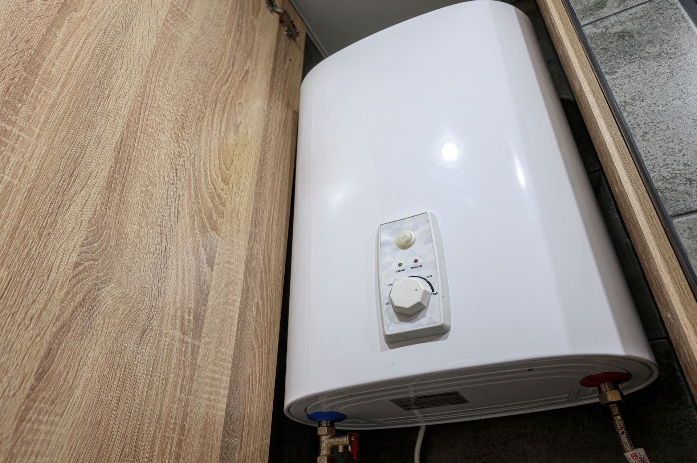

Gas vs. Electric Water Heater Repair in Garland, TX: What Homeowners Need to Know in 2026
July 18, 2026

Gas water heater repair in Garland, TX is not the same job as electric water heater repair. Failure modes, costs, and permit rules vary by fuel type in 2026.
Gas vs. Electric Water Heaters: How They Fail Differently
Common gas water heater problems:
- Pilot outages from thermocouple failure or draft issues.
- Faulty gas valves preventing burner ignition.
- Burner buildup from hard water sediment, common in Dallas County.
- Vent or flue blockages that trigger safety shutoffs.
Common electric water heater problems:
- Failed upper or lower heating elements.
- Tripped breakers or burned wiring.
- Faulty thermostats making water too hot or not hot enough.
- Corroded anode rods accelerating rust.
Does Gas Water Heater Repair in Garland, TX Require a Permit?
Replacing a thermocouple or heating element usually doesn't require a permit, but water heater replacement always does. Gas units add inspection requirements: a gas pressure test witnessed by a City Inspector, with the full gas pipe system passing before close-out.
For gas units, Garland requires:
- A gas shut-off valve within 6 feet of the heater, accessible and in the same room.
- Type B double-wall venting through the attic with 1-inch clearance from combustibles.
- Combustion air from the attic or outside, not from bedrooms or bathrooms.
- A temperature and pressure (T&P) relief valve that passes inspection.
For rentals or homes without a homestead exemption on file with the Dallas Central Appraisal District, a state-licensed master plumber registered with Garland must pull the permit.
When Should You Call a Licensed Plumber vs. DIY?
Call a licensed plumber any time repairs involve the gas line, venting, or a full replacement. Relighting a pilot light is generally safe for a confident homeowner, but anything beyond carries real risk.
Gas vs. Electric Repair Cost Comparison
| Repair Type | Typical Range | Notes |
|---|---|---|
| Thermocouple (gas) | $150 – $300 | Common DIY-adjacent repair. |
| Heating element (electric) | $100 – $250 | Parts are inexpensive. |
| Gas valve replacement | $300 – $600 | Requires licensed plumber. |
| Thermostat replacement | $150 – $300 | Upper or lower unit. |
| Full gas unit replacement | $900 – $1,800+ | Permit required in Garland. |
| Full electric unit replacement | $700 – $1,500+ | Permit required in Garland. |
Estimates vary by unit size, location, and labor rates. Speake's Plumbing, Inc. has handled gas water heater repair for Garland homeowners since 1987. Call 972-271-9144 or visit the water heaters page.